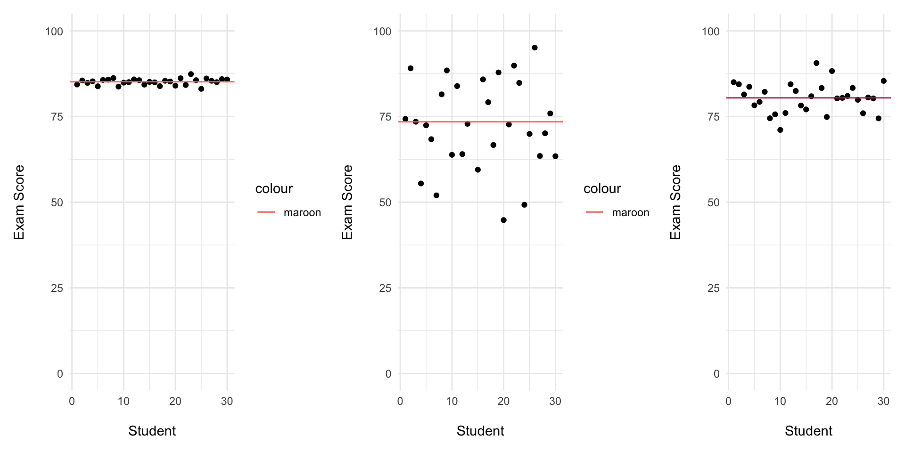

Lecture 4
Farmingdale State College
\(x\)
\(\bar{x}\)
\(\sum(x)\)
\(x^2\)
\(x\) = refers to the value for 1 person (1 datapoint) in the sample
\(\bar{x}\) = refers to the mean or average value of X in the sample
\(\sum(x)\) = refers to the sum of all x values (sum of all the datapoints)
\(x^2\) = refers to the squared value of x (x multiplied by x)
data = {1,4,3,2,4,6}
\(x\) = \(x = 1 | 4 | 3 | 2 | 4 | 6\)
\(\bar{x}\) = \(3.33\bar{3}\)
\(\sum(x)\) = \(1 + 4 + 3 + 2 + 4 + 6 = 20\)
\(x^2\) = \(1 | 16 | 9 | 4 | 16 | 36\)
Central tendency
Dispersion (aka Variability aka Variance)
The mid-point in the data
The answer most of the participants gave.
Spread-out-ness
How much the participants’ responses differ from one another
Variance

Did participants give similar answers?
{1,2,2,1,2,2,3,2,1}Did participants give wildly different answers?
{1,3,4,5,8,9,21,33}Data should have natural dispersion.
If everyone gives a similar answer, it’s harder to analyze difference.
ON AVERAGE, how far is each X-VALUE from the MIDPOINT.
Calculate how far each X-VALUE is from the MIDPOINT.
Take the AVERAGE of those distances.
In psychology, the mid-point we use will be the mean.
| Participant.ID | X |
|---|---|
| 1 | 1 |
| 2 | 3 |
| 3 | 2 |
| 4 | 2 |
| 5 | 3 |
| 6 | 2 |
| 7 | 1 |
| 8 | 3 |
| 9 | 1 |
| 10 | 2 |
Step 1. Examine Data
data = {1,3,2,2,3,2,1,3,1,2}Step 2. Calculate Mean
\(\bar{x} = \frac{\sum(x)}{n} = 1 + 3 + 2...\)
\(\bar{x} = \frac{20}{10} = 2\)
Step 2: Subtract the mean from each X-value.
\(x - \bar{x}\)
\((1-2) + (3-2) + (2-2) + (2-2)...\)
\((-1) + 1 + 0 + 0...\)
| ParticipantID | X | x-M |
|---|---|---|
| 1 | 1 | -1 |
| 2 | 3 | 1 |
| 3 | 2 | 0 |
| 4 | 2 | 0 |
| 5 | 3 | 1 |
| 6 | 2 | 0 |
| 7 | 1 | -1 |
| 8 | 3 | 1 |
| 9 | 1 | -1 |
| 10 | 2 | 0 |
The average of the deviation scores will always = 0.
On average, the x-values = x.
So the average distance of x from x is 0.
The problem is the negative numbers!
How do we get rid of negative numbers
\((x-\bar{x})^2\)
| ParticipantID | X | x-M | (x-M)^2 |
|---|---|---|---|
| 1 | 1 | -1 | 1 |
| 2 | 3 | 1 | 1 |
| 3 | 2 | 0 | 0 |
| 4 | 2 | 0 | 0 |
| 5 | 3 | 1 | 1 |
| 6 | 2 | 0 | 0 |
| 7 | 1 | -1 | 1 |
| 8 | 3 | 1 | 1 |
| 9 | 1 | -1 | 1 |
| 10 | 2 | 0 | 0 |
Step 1: Calculate the mean.
Step 2: Subtract the mean from each X-value.
Step 3: Square each deviation score.
Step 4: Add up the Squared Deviations.
\(1+1+0+1...\)
| ParticipantID | X | x-M | (x-M)^2 |
|---|---|---|---|
| 1 | 1 | -1 | 1 |
| 2 | 3 | 1 | 1 |
| 3 | 2 | 0 | 0 |
| 4 | 2 | 0 | 0 |
| 5 | 3 | 1 | 1 |
| 6 | 2 | 0 | 0 |
| 7 | 1 | -1 | 1 |
| 8 | 3 | 1 | 1 |
| 9 | 1 | -1 | 1 |
| 10 | 2 | 0 | 0 |
Step 5: Divide by (n-1).
(n-1) refers to the degrees of freedom… don’t worry about it for now.
\(\frac{\sum (x-\bar{x})^2}{n-1}\)
Variance
When we squared the deviation scores in Step 3, we inflated the deviation.
We have to undo that inflation.
How do you undo squaring?
We take the square root.
| ParticipantID | X | x-M | (x-M)^2 |
|---|---|---|---|
| 1 | 38.5 | -0.902 | 0.813 |
| 2 | 49.2 | 9.79 | 95.8 |
| 3 | 33.1 | -6.29 | 39.6 |
| 4 | 44.8 | 5.43 | 29.5 |
| 5 | 30.3 | -9.13 | 83.4 |
| 6 | 40.5 | 1.1 | 1.22 |
Step 6: Take the square root.
Mean: Calculate the mean.
Deviation scores: Subtract the mean from each x-value.
Squared deviations: Square each deviation score.
Sum of squares: Add up the squared deviations.
Variance: Divide the sum of squares by (n-1).
Standard Deviation: Take the square root of the variance.
Important
\[ s^2 = \frac{\sum(x-\bar{x})^2}{N-1} \]
Important
\[ s = \sqrt{\frac{\sum(x-\bar{x})^2}{N-1}} \]
Variance is a measure of dispersion.
Standard deviation is a better measure of dispersion, because it is standardized.
This means that a standard deviation of 1 means a distance of 1 on the scale used to measure x.
HYPE scale: 1 to 10: standard deviation of 1 means the distance from one rating to the next, from 1 to 2.
If the mean = 5, SD = 1, most scores fall between 4 and 6.
The Variance is the standard deviation squared: s²
The Standard Deviation is the square root of the variance: s
Dispersion | ⬡⬢⬡⬢